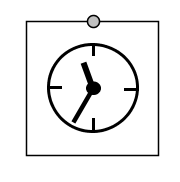

<div class="panel panel-default">
  <div class="panel-body">
 <h1>Clock</h1>


 
 

<p>Clock produces time signal for steps of dynamic simulations. 
Time step length is calculated in seconds as  <strong>1/tau.</strong> </p> 
<p>tau is evaluated in Properties window of Simulation process manager dynamic Process 3D.</p>


  </div>
  </div>